이 탭을 닫으면 편집 화면으로 돌아갑니다.
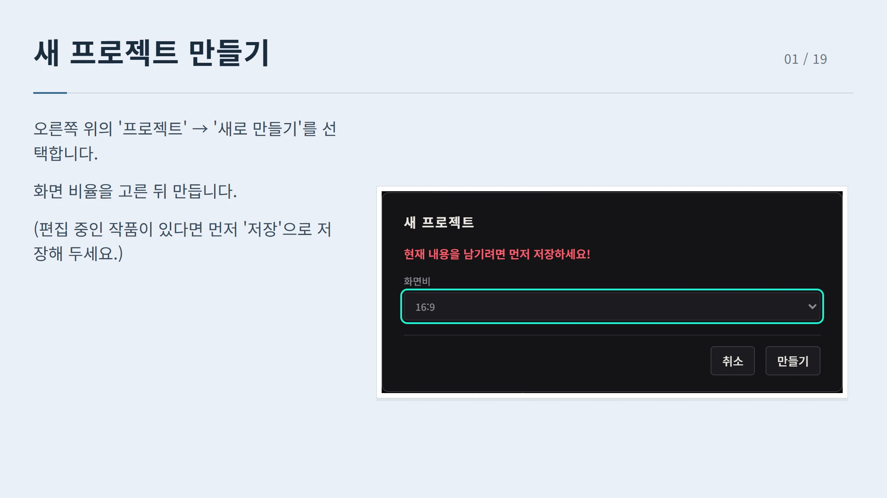
새 프로젝트 만들기 01 / 19 오른쪽 위의 '프로젝트' → '새로 만들기'를 선택합니다. 화면 비율을 고른 뒤 만듭니다. (편집 중인 작품이 있다면 먼저 '저장'으로 저장해 두세요.)
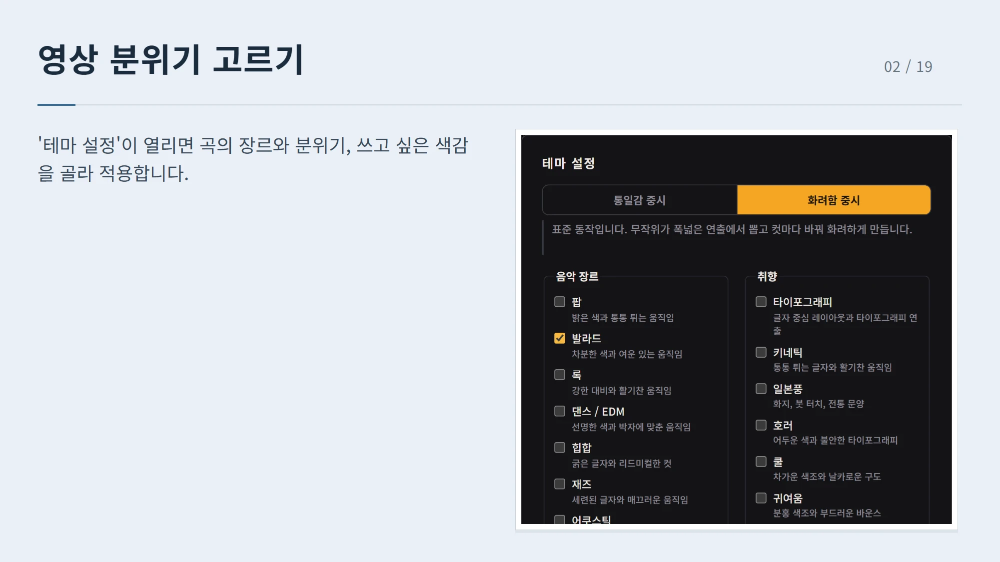
영상 분위기 고르기 02 / 19 '테마 설정'이 열리면 곡의 장르와 분위기, 쓰고 싶은 색감을 골라 적용합니다.
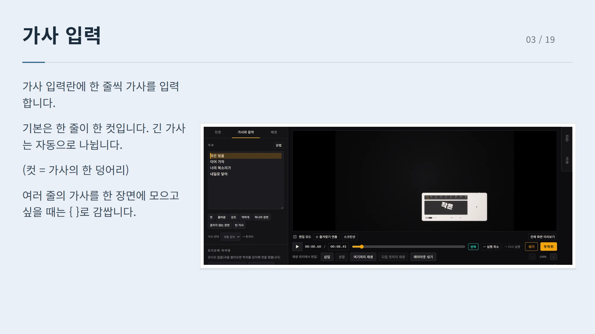
가사 입력 03 / 19 가사 입력란에 한 줄씩 가사를 입력합니다. 기본은 한 줄이 한 컷입니다. 긴 가사는 자동으로 나뉩니다. (컷 = 가사의 한 덩어리) 여러 줄의 가사를 한 장면에 모으고 싶을 때는 { }로 감쌉니다.
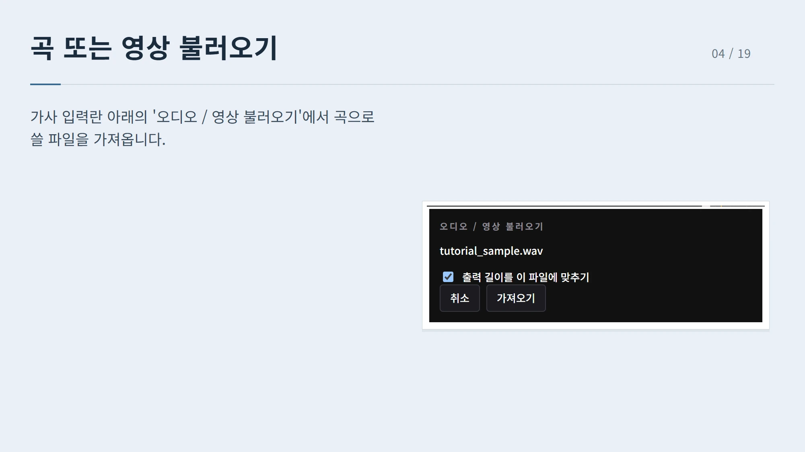
곡 또는 영상 불러오기 04 / 19 가사 입력란 아래의 '오디오 / 영상 불러오기'에서 곡으로 쓸 파일을 가져옵니다.
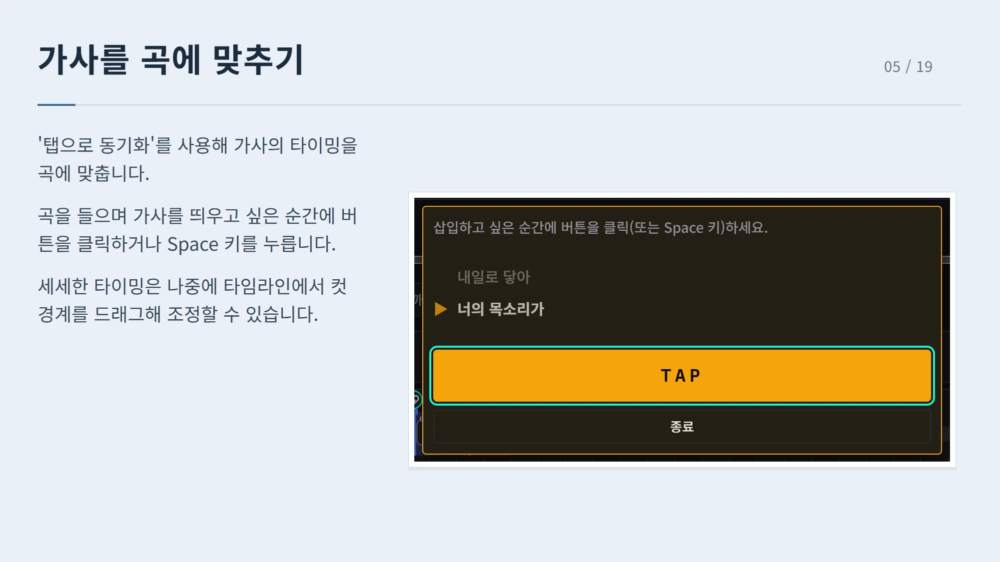
가사를 곡에 맞추기 05 / 19 '탭으로 동기화'를 사용해 가사의 타이밍을 곡에 맞춥니다. 곡을 들으며 가사를 띄우고 싶은 순간에 버튼을 클릭하거나 Space 키를 누릅니다. 세세한 타이밍은 나중에 타임라인에서 컷 경계를 드래그해 조정할 수 있습니다.
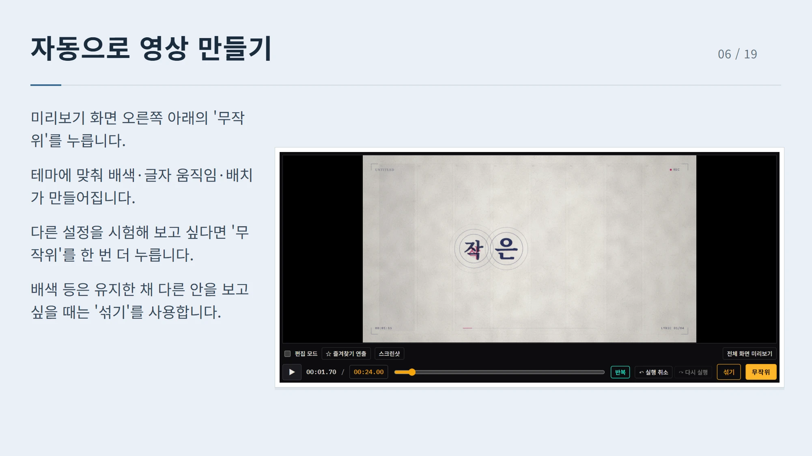
자동으로 영상 만들기 06 / 19 미리보기 화면 오른쪽 아래의 '무작위'를 누릅니다. 테마에 맞춰 배색·글자 움직임·배치가 만들어집니다. 다른 설정을 시험해 보고 싶다면 '무작위'를 한 번 더 누릅니다. 배색 등은 유지한 채 다른 안을 보고 싶을 때는 '섞기'를 사용합니다.
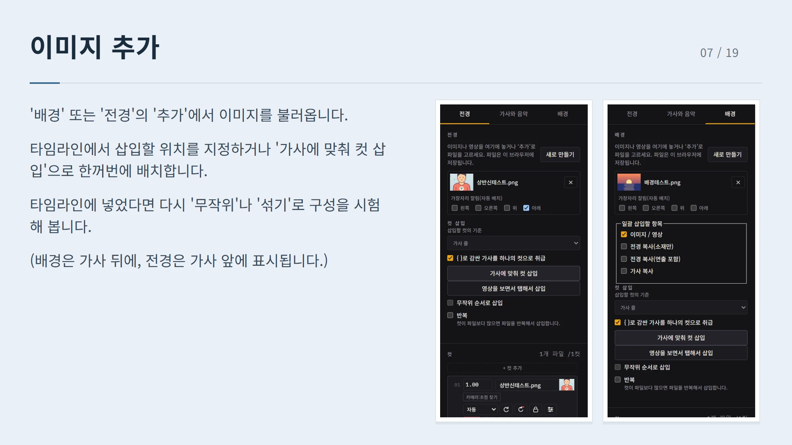
이미지 추가 07 / 19 '배경' 또는 '전경'의 '추가'에서 이미지를 불러옵니다. 타임라인에서 삽입할 위치를 지정하거나 '가사에 맞춰 컷 삽입'으로 한꺼번에 배치합니다. 타임라인에 넣었다면 다시 '무작위'나 '섞기'로 구성을 시험해 봅니다. (배경은 가사 뒤에, 전경은 가사 앞에 표시됩니다.)
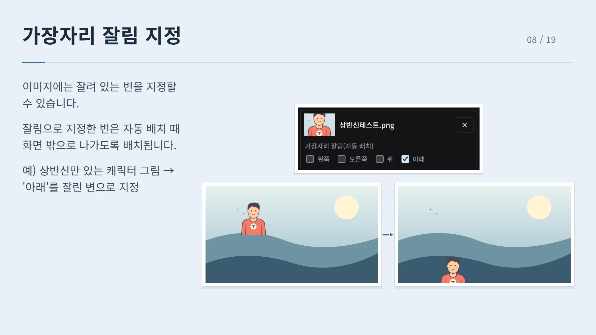
가장자리 잘림 지정 08 / 19 이미지에는 잘려 있는 변을 지정할 수 있습니다. 잘림으로 지정한 변은 자동 배치 때 화면 밖으로 나가도록 배치됩니다. 예) 상반신만 있는 캐릭터 그림 → '아래'를 잘린 변으로 지정
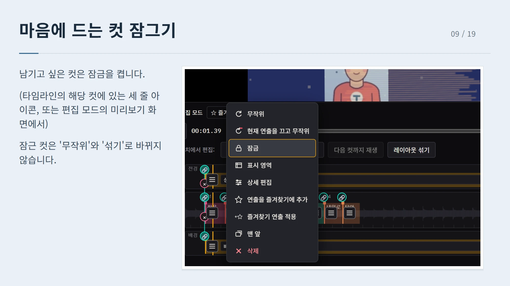
마음에 드는 컷 잠그기 09 / 19 남기고 싶은 컷은 잠금을 켭니다. (타임라인의 해당 컷에 있는 세 줄 아이콘, 또는 편집 모드의 미리보기 화면에서) 잠근 컷은 '무작위'와 '섞기'로 바뀌지 않습니다.
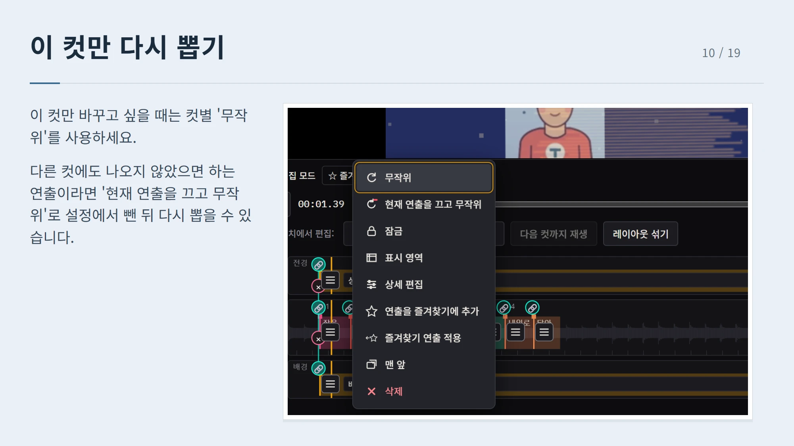
이 컷만 다시 뽑기 10 / 19 이 컷만 바꾸고 싶을 때는 컷별 '무작위'를 사용하세요. 다른 컷에도 나오지 않았으면 하는 연출이라면 '현재 연출을 끄고 무작위'로 설정에서 뺀 뒤 다시 뽑을 수 있습니다.
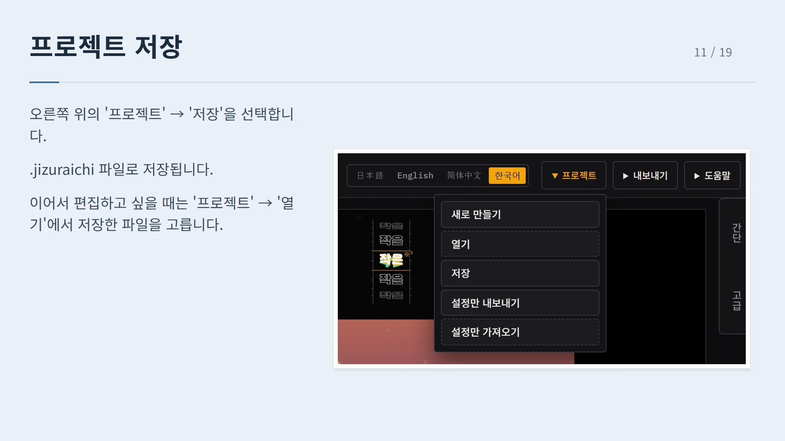
프로젝트 저장 11 / 19 오른쪽 위의 '프로젝트' → '저장'을 선택합니다. .jizuraichi 파일로 저장됩니다. 이어서 편집하고 싶을 때는 '프로젝트' → '열기'에서 저장한 파일을 고릅니다.
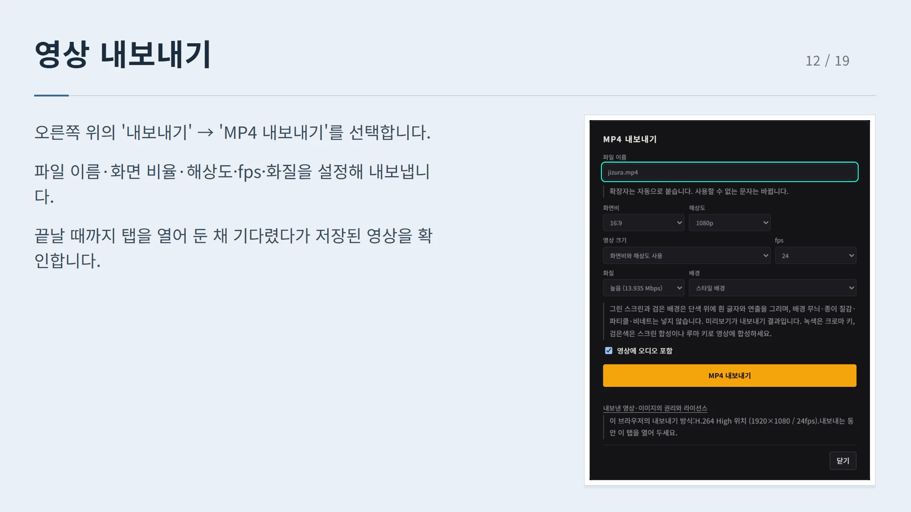
영상 내보내기 12 / 19 오른쪽 위의 '내보내기' → 'MP4 내보내기'를 선택합니다. 파일 이름·화면 비율·해상도·fps·화질을 설정해 내보냅니다. 끝날 때까지 탭을 열어 둔 채 기다렸다가 저장된 영상을 확인합니다.
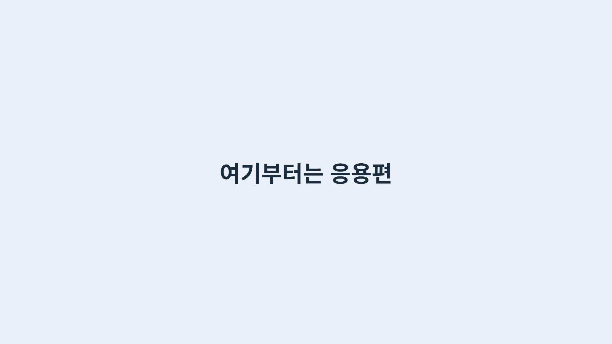
여기부터는 응용편 13 / 19
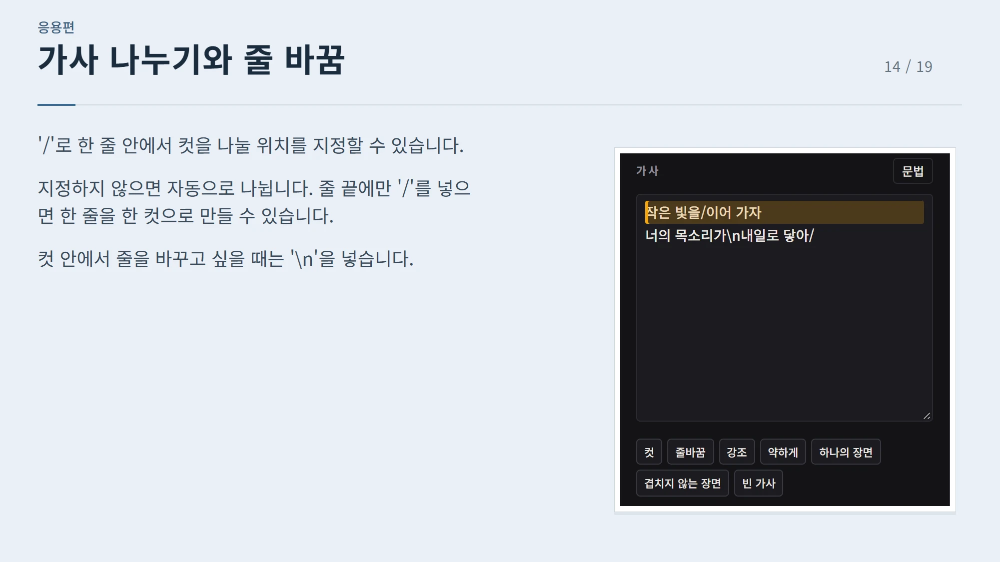
응용편 가사 나누기와 줄 바꿈 14 / 19 '/'로 한 줄 안에서 컷을 나눌 위치를 지정할 수 있습니다. 지정하지 않으면 자동으로 나뉩니다. 줄 끝에만 '/'를 넣으면 한 줄을 한 컷으로 만들 수 있습니다. 컷 안에서 줄을 바꾸고 싶을 때는 '\n'을 넣습니다.
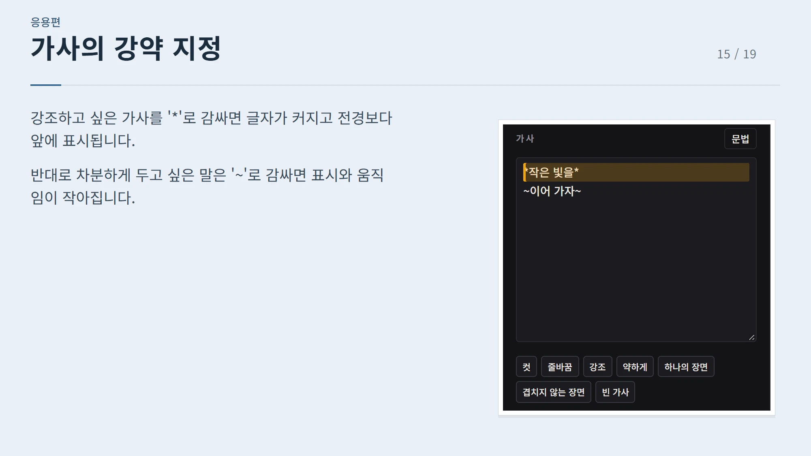
응용편 가사의 강약 지정 15 / 19 강조하고 싶은 가사를 '*'로 감싸면 글자가 커지고 전경보다 앞에 표시됩니다. 반대로 차분하게 두고 싶은 말은 '~'로 감싸면 표시와 움직임이 작아집니다.
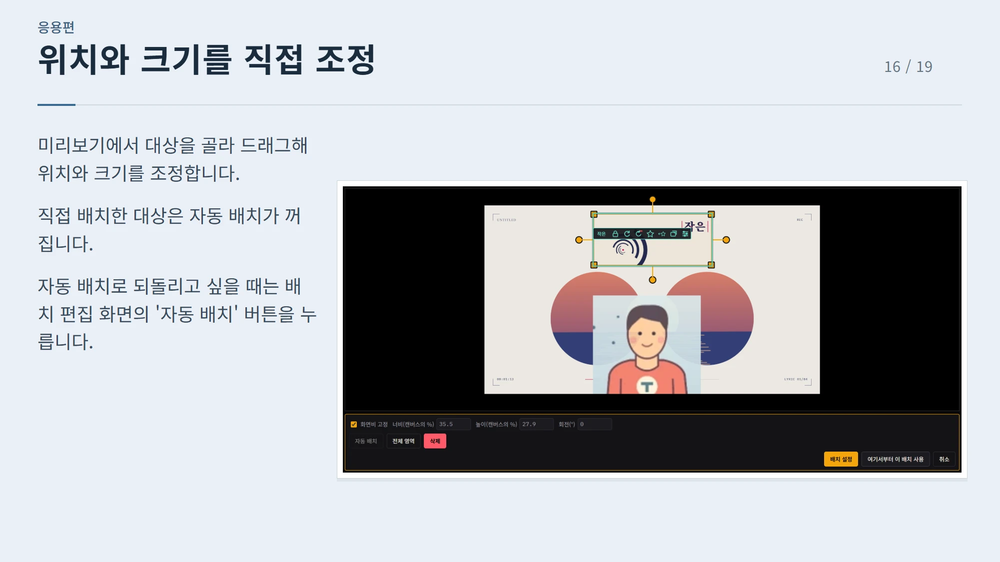
응용편 위치와 크기를 직접 조정 16 / 19 미리보기에서 대상을 골라 드래그해 위치와 크기를 조정합니다. 직접 배치한 대상은 자동 배치가 꺼집니다. 자동 배치로 되돌리고 싶을 때는 배치 편집 화면의 '자동 배치' 버튼을 누릅니다.
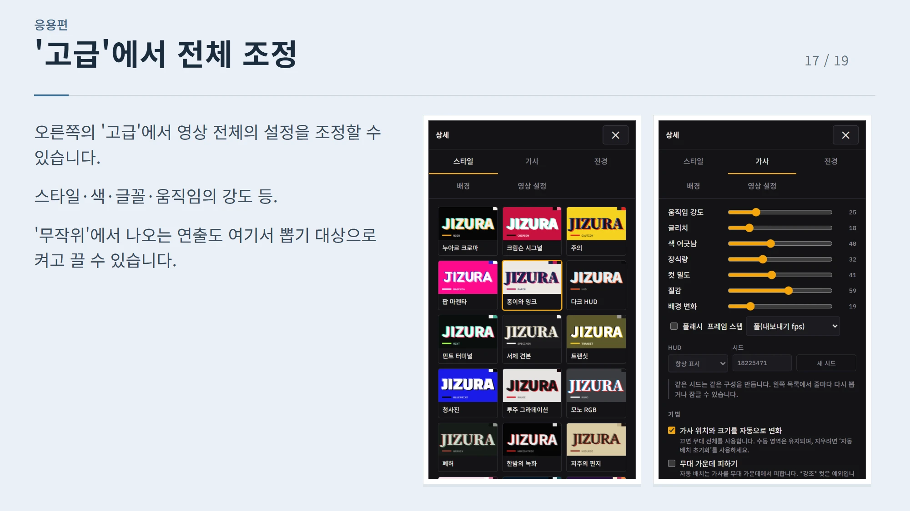
응용편 '고급'에서 전체 조정 17 / 19 오른쪽의 '고급'에서 영상 전체의 설정을 조정할 수 있습니다. 스타일·색·글꼴·움직임의 강도 등. '무작위'에서 나오는 연출도 여기서 뽑기 대상으로 켜고 끌 수 있습니다.
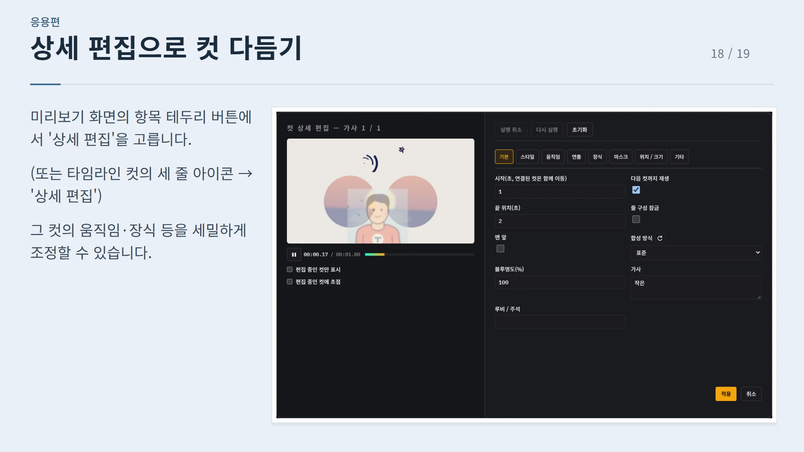
응용편 상세 편집으로 컷 다듬기 18 / 19 미리보기 화면의 항목 테두리 버튼에서 '상세 편집'을 고릅니다. (또는 타임라인 컷의 세 줄 아이콘 → '상세 편집') 그 컷의 움직임·장식 등을 세밀하게 조정할 수 있습니다.
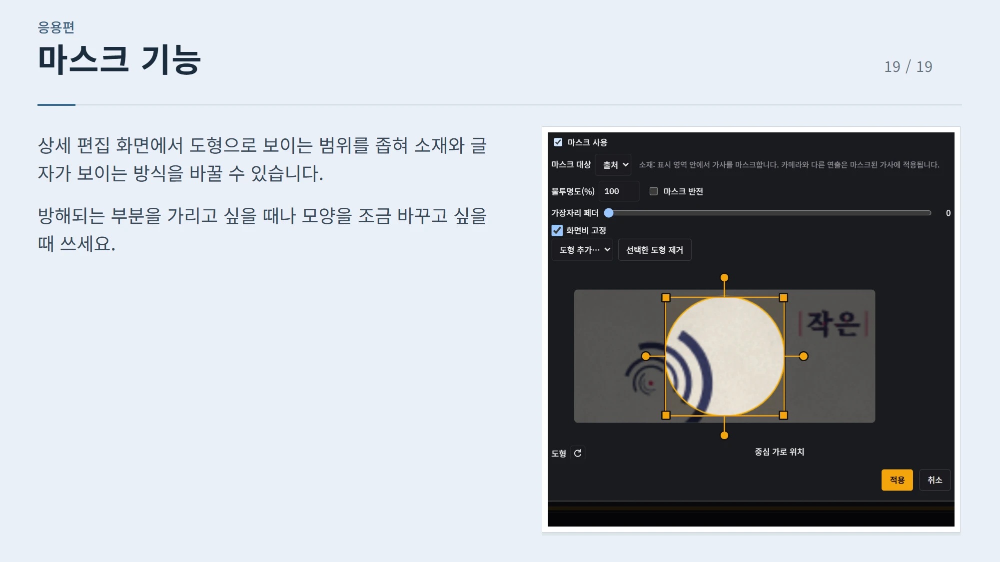
응용편 마스크 기능 19 / 19 상세 편집 화면에서 도형으로 보이는 범위를 좁혀 소재와 글자가 보이는 방식을 바꿀 수 있습니다. 방해되는 부분을 가리고 싶을 때나 모양을 조금 바꾸고 싶을 때 쓰세요.